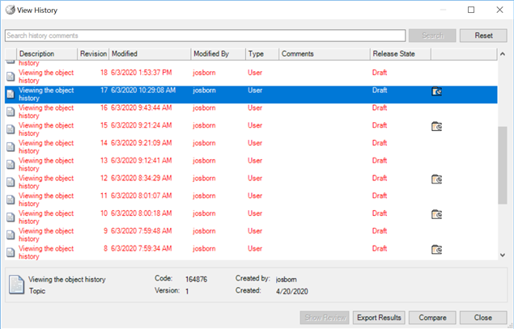
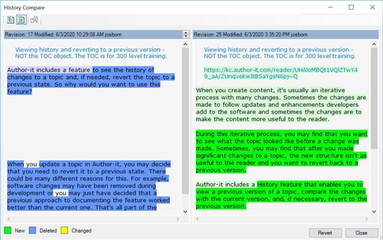

When you create content, it's usually an iterative process with many changes. Sometimes the changes are made to follow updates and enhancements developers add to the software and sometimes the changes are to make the content more useful to the reader.
During this iterative process, you may find that you want to see what the topic looked like before a change was made. Sometimes, you may find that after you made significant changes to a topic, the new structure isn't as useful to the reader and you want to revert back to a previous version.
Author-it includes a History feature that enables you to view a previous version of a topic, compare the changes with the current version, and, if necessary, revert to the previous version.
When you view the history, you see a list of all versions of the object. You'll notice that some revisions have an icon. These are revisions where the content can be compared and, if needed, you can revert to that revision. The following graphic shows a list of an object's revisions:

If you select a revision with an icon, you can compare the contents between the revision and the current version. Changes to the object are highlighted in different colors, depending on the type of change. The following graphic shows a comparison between revisions, with the old revision on the left:

Note: By default, the current version is selected for the comparison. You can also compare two past revisions.
In addition to comparing content changes, you can also compare changes to an object's properties. This let's you see information like the template, the release state, and who created the object.
For more information about object history, refer to the following resources:
View an object's edit history (Author-it Knowledge Center)
Compare an object's history (Author-it Knowledge Center)
Complete the following to view an object's history:
In the library view, right-click on the object and select History.
(Optional) Select a previous revision with a revision icon and click Compare.
(Optional) To revert to the previous version, click Revert.
Note: You can't revert an object if it's open and locked. Close the object and then select it from the library.